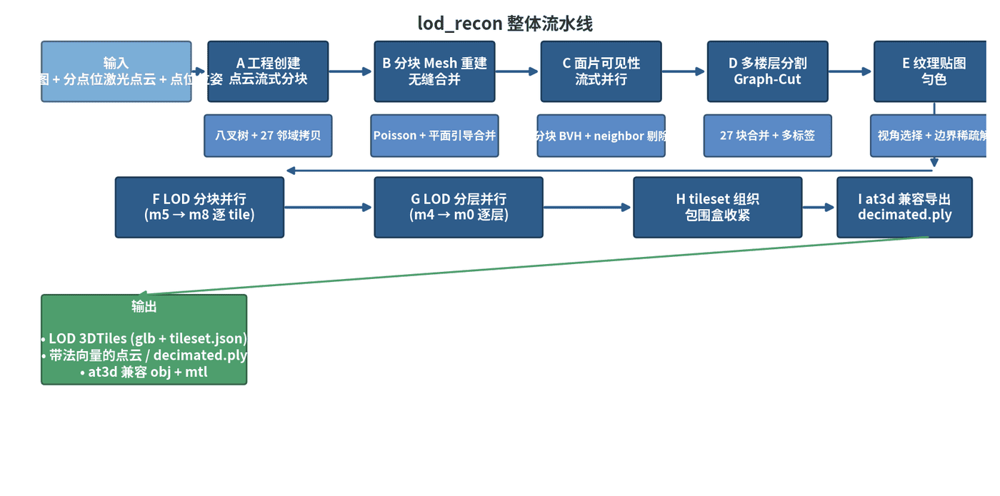
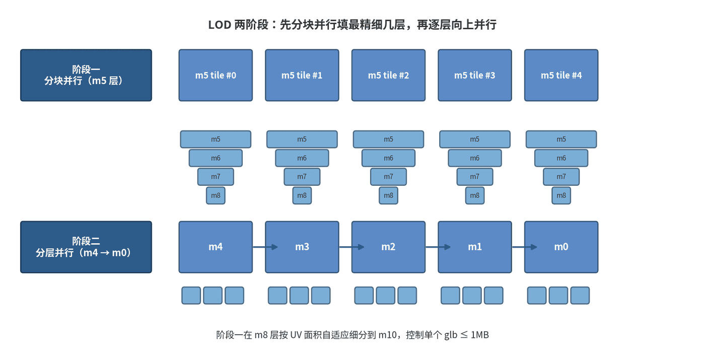

Indoor large-scene reconstruction from station-based scanning.
Indoor Large-Scale Reconstruction
A cloud-oriented reconstruction system for VR house tours, museums, and station-scanned venues, designed to process very large indoor scenes through tiled parallel algorithms instead of a single global reconstruction job.
Background
For Realsee VR house tours, museums, and other station-scanned venues, reconstruction has to support large indoor spaces with many scan stations, occlusions, multiple floors, and interactive browser viewing. The data scale can exceed single-machine memory, so the full algorithm chain must support block-level parallel processing while still producing one coherent model.
Key Work
- Designed a tiled parallel reconstruction framework so the full pipeline can run under bounded memory and scale across cloud workers.
- Solved topology consistency issues introduced by block reconstruction, including seam conflicts between neighboring mesh blocks.
- Built robust mesh hole filling for occluded regions and incomplete observations.
- Developed multi-floor segmentation for complex indoor layouts, including irregular floor shapes.
- Implemented automatic ceiling and top-surface hiding during browsing to improve VR navigation and visual experience.
- Built large-scene global color balancing with a semi-global optimization formulation that supports parallel execution.
- Implemented textured mesh simplification that preserves seamless block merging while simplifying geometry and naturally downsampling texture attributes.
- Designed the complete LOD generation pipeline and delivery strategy for large interactive scenes.
My Contribution
I designed and implemented the overall algorithm framework and parallel execution framework, including the tiled data organization, task decomposition, module contracts, and cloud execution path.
I also designed and implemented the major reconstruction modules:
- Block-parallel reconstruction and topology-consistent mesh merging
- Robust mesh hole filling for occlusion-heavy indoor scans
- Multi-floor segmentation for regular and irregular floor structures
- Automatic ceiling/top hiding for interactive VR browsing
- Semi-global texture color balancing for large scenes
- Textured mesh simplification and seamless block merging
- LOD generation algorithms, LOD strategy, and 3D Tiles-style delivery
I led the deployment of the pipeline onto a cloud Docker cluster so large scenes could be processed through distributed production jobs.
Outcome
The system turns station-based indoor scans into large, browser-ready 3D scenes with bounded memory use, parallel cloud execution, consistent mesh topology, robust floor handling, global texture consistency, and LOD-based interactive delivery.
For public examples of Realsee VR spaces and interactive scene browsing, see the official Realsee discovery page.

